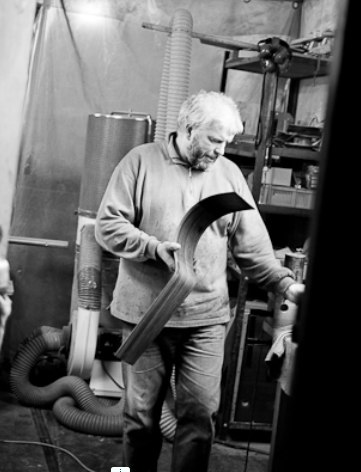
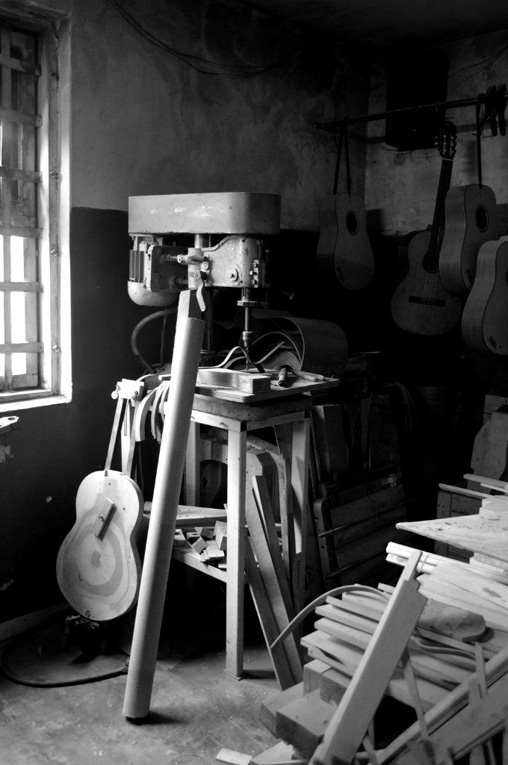
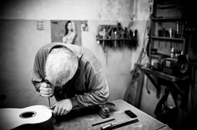
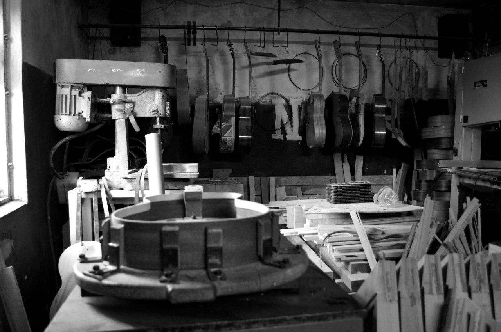

Custom made acoustic guitars
Custom made acoustic guitars

I have been making guitars since 1991. The road may be similar to others. In childhood, at some point you start
to love music, then love much. Then you want to play it yourself. Then they begin to scratch their hands to
remake their guitar - because you are the smartest and you know how best.
Moreover, my father also once itched his hands, and he managed to get hold of a plane, a chisel, emery and three
drills. Redoing, redoing ... It is clear that this will not end the matter. At the same time, a school, an
institute, a factory are moving - quite a normal life. But hands continue to be nervous. Here and there, then
magazines and rare cool guitars come across - and the dream is growing stronger.
You start to do. Of course, you get all your friends and acquaintances: someone brought pegs, someone brought
sensors, someone made a bridge, someone else limped it, and so on with everything. We drove – we drove - we
arrived. Is done. (1992)

You walk around the city, you show, you take pictures, you brag ... well, you enjoy. And then humanity makes an
unexpected quirk: the guitar is for sale! Everything. There is no way back. Education and native plant go to the
forest. Go-go. Repairs, electric guitars, bass. In 2002, Kibin Guitars officially appeared, and I start
practicing guitar engineering professionally, that is, all day long. Lesha's friend sends the holy book of all
acoustic makers, Cumpiano & Natelson - Guitarmaking:
Tradition and Technology from the States. Nature sometimes plays a cruel joke, but fools and novices are lucky.
In general, the first classic turned out. (2003) Naturally, when I started doing the second, I thought that I
was the smartest and I know everything ...
And, of course, that feeling never returned. Then everything went through blood, sweat and tears. Nobody
canceled the
experience and it is necessary to type it - study, learn, listen and do.

In 2005 I bought the building of the workshop, in which I work now. In 2011, the first of the countries of the
former Soviet Union brought their guitars to the exhibition Musikmesse in Frankfurt. Today I am the owner of a
good workshop with machine tools and wood supply in case of
the death of India. All the guitars coming out of here are only handmade, but with a reasonable price. Like
this!
Andrei Kibin
